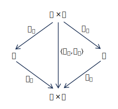

Category Theory for the Sciences
科学のための圏論
Exercise 3.1.1.14. 演習 3.1.1.14.
-
a. Let \(X\) and \(Y\) be sets. Construct the swap map \(s:X×Y→ Y×X\) using only the universal property for products. If \(π_1: X×Y→X, π_2:X×Y→Y, p_1:Y×X→Y\), and \(p_2:Y×X→X\) are the projection functions, write \(s\) in terms of the
symbols \(π_1, π_2, p_1, p_2, \circ\) and \(\langle,\rangle\).
\(X\)と\(Y\)を集合とする。積の普遍性のみを用いて、写像\(s:X×Y→ Y×X\)を構成せよ。もし、\(π_1: X×Y→X, π_2:X×Y→Y, p_1:Y×X→Y\)、および\(p_2:Y×X→X\)が射影関数であるならば、\(s\)を記号\(π_1, π_2, p_1, p_2, \circ\)および\(\langle,\rangle\)を用いて表せ。
-
b. Can you prove that \(s\) is an isomorphism using only the universal propert y for products?
積の普遍性のみを用いて、\(s\) が同型写像であることを証明できるか？
●解答
-
a.

-
b. Consider the map \(\langle p_2, p_1 \rangle : Y × X → X × Y\) . Let \(s: X × Y → X ×Y \) be the composite
\(\langle p_2, p_1 \rangle \circ \langle π_2, π_1 \rangle\). We have \(π_1 \circ s = π_1\) by the following calculation:
写像 \(\langle p_2, p_1 \rangle : Y × X → X × Y\) を考える。\(s: X × Y → X ×Y \) を合成写像 \(\langle p_2, p_1 \rangle \circ \langle π_2, π_1 \rangle\) とする。以下の計算により、\(π_1 \circ s = π_1\) が成り立つ。
\[
\begin{align}
π_1 \circ s &= π_1 \circ \langle p_2, p_1 \rangle \circ \langle π_2, π_1 \rangle \\
&= p_2 \circ \langle π_2, π_1 \rangle = π_1
\end{align}
\]
and by a similar calculation, \(π_2 \circ s = π_2\). But we also have \(π_1 \circ id_{X×Y}=π_1\) and \(π_2 \circ id_{X×Y}=π_2\). Thus the universal property (Proposition 3.1.1.10) implies that
\(s = id_{X×Y}\) .
同様の計算により、\(π_2 \circ s = π_2\) が成り立ちます。また、\(π_1 \circ id_{X×Y}=π_1\) および \(π_2 \circ id_{X×Y}=π_2\) も成り立ちます。したがって、普遍性（命題 3.1.1.10）より、
\(s = id_{X×Y}\) となります。
By similar reasoning, if \(t: Y ×X → Y × X\) is the composite \(\langle π_2, π_1 \rangle \circ \langle p_2, p_1 \rangle\), we
can show that \(t = id_{Y×X}\). By Definition 2.1.2.14, the functions \(s\) and \(t\) constitute an
isomorphism \(X × Y → Y × X\).
同様の推論により、もし \(t: Y ×X → Y × X\) が合成写像 \(\langle π_2, π_1 \rangle \circ \langle p_2, p_1 \rangle\) であるならば、\(t = id_{Y×X}\) であることを示すことができる。定義 2.1.2.14 より、関数 \(s\) と \(t\) は同型写像 \(X × Y → Y × X\) を構成する。